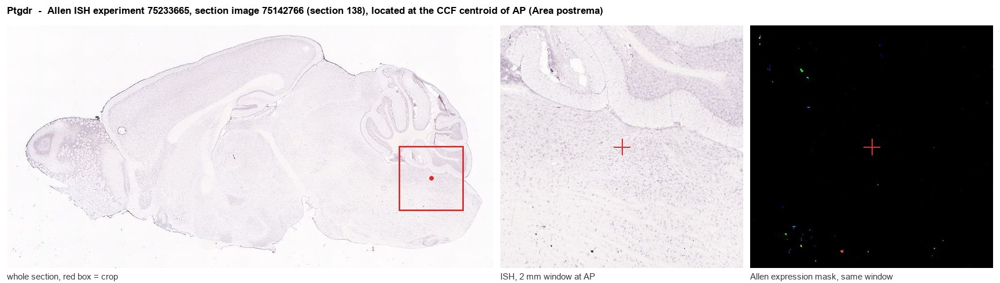
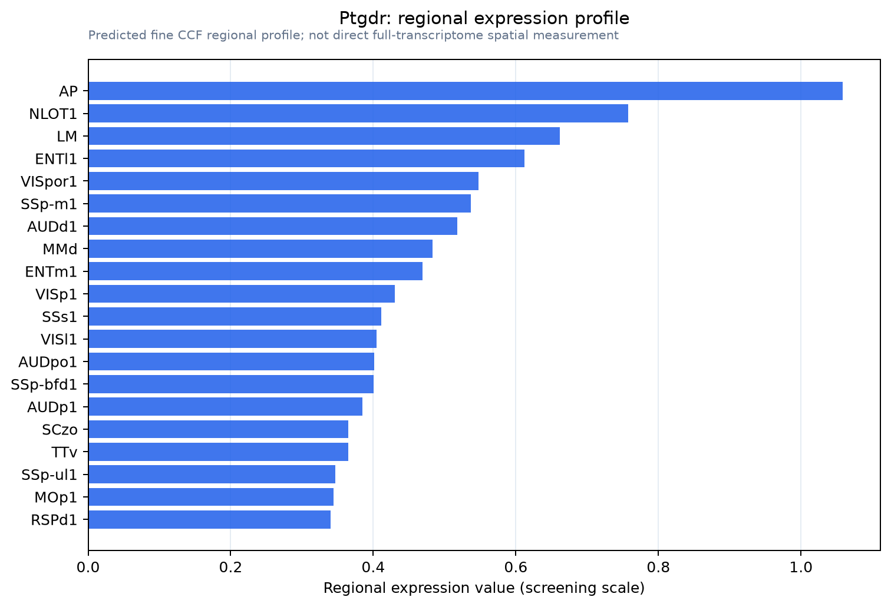

Ptgdr
Prostaglandin D2 receptor (PGD receptor) (PGD2 receptor) (Prostanoid DP receptor)
Spatial tier: REGION_BIASED · Class: GPCR · Top region: AP (Area postrema) · Positive regions: 38/554
46.0Discovery Score
38.7Targetability Score
CEvidence grade C
What this means: Ptgdr: fine CCF profile is region-biased toward AP (top regions: AP, NLOT1, LM, ENTl1, VISpor1); this is a discovery lead, not direct proof.
Function in AP: evidence, prediction, innovation
- Gene function
- Ptgdr encodes DP1, a Gs-coupled GPCR for prostaglandin D2; ligand binding raises cAMP and activates PKA. DP1 mediates vasodilation, platelet inhibition and the somnogenic action of PGD2. It is distinct from the second PGD2 receptor DP2/CRTH2 (Ptgdr2), which is Gi-coupled and chemotactic.
- Region function
- The area postrema is a circumventricular organ in the dorsal medulla whose fenestrated capillaries let it sample blood-borne GDF15, amylin, GLP-1 and toxins. Its excitatory neurons project to the NTS and parabrachial nucleus to drive nausea, emesis, conditioned taste aversion and anorexia.
- Published in this region
- none No region-specific literature found. Gerashchenko et al. 1998 showed rat DP receptor mRNA is concentrated in leptomeninges and ocular epithelia rather than brain parenchyma, and Scammell et al. 1998 found PGD2 infusion induces Fos in the NTS immediately adjacent to the AP.
- Predicted function
- Prediction: because DP1 tracks fenestrated, barrier-poor tissue, AP expression most likely lies on the AP vasculature, meningeal-like stroma or a Gs-coupled neuron subset, where inflammatory PGD2 would raise cAMP and lower the nausea threshold. BW245C delivered to AP should produce conditioned taste aversion and hypophagia; Ptgdr deletion or laropiprant should blunt inflammation-driven sickness behaviour while sparing GDF15- or amylin-evoked responses.
- Innovation
- ★★★★★ 5/5 Brain PGD2/DP1 work has been almost entirely about sleep, leaving the prostaglandin-accessible AP untested despite off-the-shelf pharmacology.
- Tools
- DP1 agonist BW245C; antagonists BWA868C and laropiprant (MK-0524); Ptgdr-null mice; anti-DP1 antibodies and ISH probes; Ptgds (L-PGDS) knockout to remove the ligand. No Ptgdr-Cre line known.
- References
Direct evidence located at the region

Allen ISH experiment 75233665, section image 75142766 (section 138): the section that contains the CCF centroid of Area postrema according to the Allen image-to-atlas alignment (reference_to_image), with a 2 mm window around that point. Left: whole section, red box = window. Middle: ISH signal. Right: Allen's expression-mask view of the same window. open this image in the Allen viewer
Look it up yourself: Allen Mouse Brain ISH for PtgdrAllen reference atlas: AP (structure 207)ABC Atlas MERFISH viewer(in the ABC Atlas choose dataset MERFISH-C57BL6J-638850-CCF, colour cells by gene "Ptgdr" or by parcellation_substructure "AP")All genes confined to AP + 3-D brain
Direct spatial evidence
MERFISH REGION LOCATOR

Regional expression figure

Predicted WMB × fine-CCF profile; not direct full-transcriptome spatial measurement.
Spatial profile
Evidence and specificity
- Evidence status
- PREDICTED_FINE
- Direct sources
- None; predicted localization only
- Exclusive threshold
- 12 positive regions out of 554
- Spatial specificity
- 0.312
- Top-region fraction
- 0.052
- Filter status
- PASS
Interpretation limits
- Cell-type-to-region projection is imputed expression, not direct spatial measurement.
- Adult reference atlases do not establish stability across age, sex, strain, state, or disease.
- Transcript abundance does not guarantee protein abundance or genetic-tool performance.